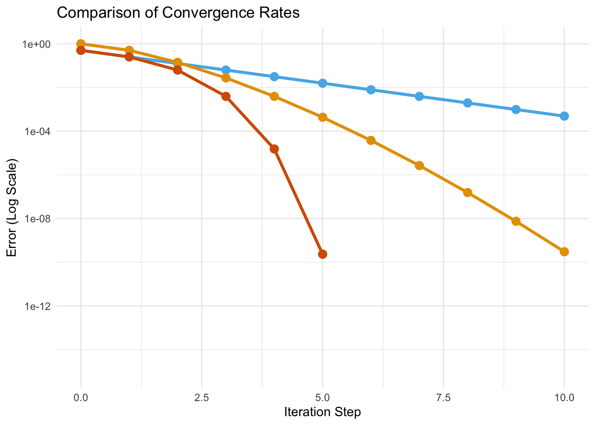
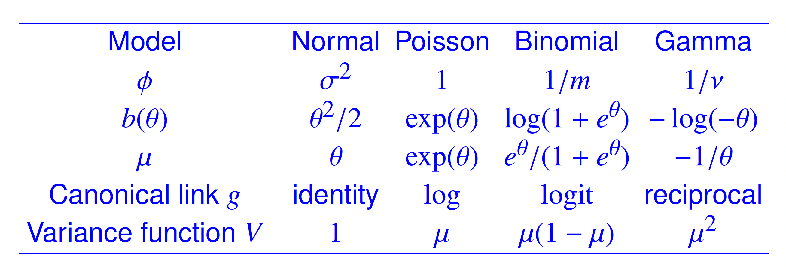

Gradient Methods
Overview
Today, we cover:
- Review of GLMs
- Gradient methods
- Newtons method continued
- Iteratively reweighted least squares for GLM
- Quasi-Newton
Announcements
- HW3 posted later today and due 3/4 at 10:00AM
- No class tomorrow, 2/12
Readings:
- Peng Chapter 3
- Givens and Hoeting Chapter 2
Rates of convergence
One of the ways algorithms can be compared is via their rates of convergence to some limiting value.
- Typically we have an iterative algorithm that is trying to find the max/min of an objective function \(f\)
- Want to estimate how long it will take to reach that optimal value
- Three rates of convergence we will focus on:
- linear (slowest)
- superlinear (faster)
- quadratic (fastest)
Algorithms that require more information about \(f\) (such as its derivative) tend to converge more quickly.
Faster rate here means fewer iterations, not necessarily faster computation time.
- important caveat is that these describe local convergence i.e. what happens when you’re already near the solution
- cost per iteration matters and sometimes cost is larger per iteration for quadratic methods
Rates of convergence
Generalized linear models (GLMs)
Extension of standard linear model to allow for non-Normal response distributions.
\[\begin{align} g(\mu_i) &= x_i^T\beta\\[3mm] \mu_i &= E(Y_i|x_i) \end{align}\]
- \(g(\cdot)\) is a known link function
- \(Y_i \sim EF\), iid
- Exponential Family distribution, i.e. Normal, binomial, Poisson, etc.
- \(Var(Y_i|X_i) = \phi Var(\mu)\)
- Known variance function that (often) depends on the mean
Sometimes \(g(\mu_i) = \eta_i\) is called the linear predictor Link function links the linear predictor (linear combination of the covariates) with the mean of the outcome Linearity assumption now applies to \(g(\mu_i)\)
Canonical links

Generalized linear models (GLMs)
Linear regression:
\[\hat{\beta} = (X^TX)^{-1}X^TY\]
GLMs:
- \(\hat{\beta}\) (typically) cannot be obtained in closed form
- Need an numeric estimation approach, i.e. an iterative algorithm
Poisson regression
\[\log(E[Y_i|X_i]) = X_i^T\beta \]
- \(Y_i \sim Poisson(\mu_i)\)
- \(Var(\mu_i) = \mu_i\)
- \(g'(\mu_i) = \frac{1}{\mu_i}\)
How do we find \(\beta\)?
- Use maximum likelihood
Poisson regression log-likelihood
\[l(\mu_i) = \sum_i \left( y_i\log\mu_i-\mu_i-\log y_i!\right)\]
- \(\mu_i = e^{X_i^T\beta}\)
\[l(\beta) = \sum_i \left( y_iX_i^T\beta-e^{X_i^T\beta}-\log y_i!\right)\]
Estimate unknown \(\beta\) by solving
\[\hat{\beta} = \arg\min_{\beta} \sum_i \left( y_iX_i^T\beta-e^{X_i^T\beta}-\log y_i!\right)\]
Write this out in both latex and Yes,you can check second derivative
Poisson regression log-likelihood
Can solve using steepest descent or Newton
- Need gradient and Hessian
- gradient: \(\frac{\partial l(\beta)}{\partial \beta} = \sum_i(Y_i - e^{X_i^T\beta})X_i\)
- Hessian: \(\frac{\partial^2 l(\beta)}{\partial \beta^2} = -\sum_i e^{X_i^T\beta} X_i^TX_i\)
- Is this a convex optimization problem?
Something of an abuse of notation here. Always make sure your dimensions line up! Check the dimensions on this and make sure they are good, if not mess around with the transpose
Poisson regression optimization
Using Steepest Descent:
\[\beta_{t+1} = \beta_t - \alpha \frac{\partial l(\beta)}{\partial \beta}\]
Using Newton’s Method
\[\beta_{t+1} = \beta_t - \left[\frac{\partial^2 l(\beta)}{\partial \beta^2}\right]^{-1} \frac{\partial l(\beta)}{\partial \beta}\]
Next we will look at Fisher scoring and IRLS, other numerical methods for obtaining MLE in GLMs
Exercise
Go to lab exercise, implement Newton’s method for Poisson regression. Compare with result from glm()
Have them start with the lab solution from last week For homework 2, they will do the same thing for logistic regression
Fisher’s information
Sometimes, gradient and Hessian (or related quantities) go by other names in the context of statistical modeling.
- Score function: first derivative of log-likelihood with respect to parameter vector \(\boldsymbol{\beta}\). This is the gradient.
\[U(\boldsymbol{\beta}) = \nabla \log L(\boldsymbol{\beta})\]
- Information (aka Fisher’s information): negative expected value of the Hessian.
\[I(\boldsymbol{\beta}) = Var[U(\boldsymbol{\beta})] = -E\left[ \nabla^2 \log L(\boldsymbol{\beta})\right] = [Var(\beta)]^{-1}\]
- observed information: A function of the sample size \(n\)
\[I_n(\boldsymbol{\theta}) = - [\nabla^2 \log L(\boldsymbol{\theta})]_{\theta = \hat{\theta}}\]
Often you will see different notation for the observed vs. expected information
Observed vs. Expected information
Observed information is often easier to work with
In many GLMs, observed and expected information are equivalent
Expected information shown to outperform observed in constructing confidence intervals
Observed vs. Expected information: Poisson
For other GLMs with canonical link this is also true
Newton’s method for GLMs
From last lecture, the Newton’s method update is:
\[x_{t+1} = x_t - \{ f''(x_t) \}^{-1} f'(x_t).\]
If you are trying to optimize parameters \(\beta\) in a log-likelihood function, this becomes:
\[\begin{align} \beta_{t+1} &= \beta_t - \{ l''(\beta_t) \}^{-1} l'(\beta_t)\\ &= \beta_t + \{I_n(\beta_t) \}^{-1}U(\beta_t) \end{align}\]
Fisher Scoring \[\beta_{t+1}= \beta_t + \{I(\beta_t) \}^{-1}U(\beta_t)\]
For exponential family in canonical form, Newton’s method and fisher scoring are identical (prove this to yourself- is it for only one parameter? Does it apply for GLMs?)
Fisher scoring
Similar to Newton’s method, but replace observed information for Expected information.
- Newton’s method and Fisher scoring have the same asympotic properties, but for individual problems one or another may be easier computationally or analytically
- I.E., for when observed information isn’t semi positive definite and can’t be inverted
- However, Newton’s method and Fisher scoring are equivalent for GLM with canonical link
- This is because the observed and expected information are the same in this setting (check!)
\[\beta_{t+1} = \beta_t + \{I(\beta_t) \}^{-1}U(\beta_t)\]
Really, this is just a special case of gradient descent similar but less general than Newton.
Iteratively reweighted least squares for GLM
In GLM, there is usually no closed form solution for the MLE, so the model fitting is done numerically as we’ve seen. In linear regression models, \(E(y_i |x_i) = x_i^T \beta\), and we minimize
\[S(\beta) = \sum_i (y_i - x_i^T \beta)^2, \]
to get \(\hat{\beta} = (X^TX)^{-1}X^TY\).
Question: For GLMs, can we minimize \(S(\beta) = \sum_i (g(y_i) - x_i^T \beta)^2\)? Answer: No, because \(E(g(y|x))\ne g(E(y|x)) = x^\beta\), since \(g\) is nonlinear. This means we cannot transform \(y\) by \(g\) and then run linear regression.
Why or why not? Idea is that it would be nice if we could do linear regression
Iteratively reweighted least squares
Idea: Approximate \(g(y_i)\) by a linear function so that the OLS formula can be used.
Algorithm: at step \(t\) with current solution \(\beta^t\), linearize \(g(y_i)\) around \(\hat{\mu}^t = g^{-1}(x_i^T\beta^t)\) (the fitted value for \(y_i\) at current step).
Denote the linearized value by \(\tilde{y}_i^t\)
\[\tilde{y}_i^t = g(\hat{\mu}^t) + (y_i-\hat{\mu}^t)g'(\hat{\mu}^t ).\]
Now we can regress \(\tilde{y}_i^t\) on \(x_i\) to estimate \(\beta^{t + 1}\). However, \(\tilde{y}_i^t\) is heteroscedastic, i.e., the variances are not identical. - For most distributions the variances is related to the mean.
I don’t love this notation, but it seems to make sense
Iteratively reweighted least squares
Derive the variances of \(\tilde{y}_i^t\), and use the inverse of the variance as weights in a weighted least square (WLS):
\[W_i^t = \left[Var(\tilde{y}_i^t) \right]^{-1} = \left[ \{g'(\hat{\mu}^t)\}^2V(\hat{\mu}^t) \right]^{-1}\]
We can then minimize the following:
\[S(\beta) = \sum_i W_i^t(\tilde{y}_i^t - x_i^T \beta)^2. \]
Which gives solution
\[\hat{\beta} = (X^TW^tX)^{-1}(X^TW^t \tilde{y}^t)\]
Iteratively reweighted least squares
IRLS algorithm:
- Start with initial estimates, generally \(\mu_i^0 = y_i\)
- Form \(\tilde{y}^t\) and \(W^t\)
- Estimate \(\beta^{t+1}\)
- Form \(\mu_i^{t+ 1}= g^{-1}(x_i^T\beta^{t+1})\), and return to step 2
- McCullagh and Nelder (1983) showed that IRLS is equivalent to Fisher scoring.
- Using the canonical link, IRLS is also equivalent to Newton-Raphson
IRLS comes up in gams too, but we’re not going to cover that this eyar Newton is same as Newton-Raphson
Inference on GLM parameter estimates
- \(\hat{Var}(\hat{\theta}) = [I(\hat{\theta})]^{-1}\)
- Then can use LRT, Wald, or Score test to obtain \(p\)-values and confidence intervals
Wald test statistic \(Z\) is given by \[Z^2 = (\hat{\theta}_{MLE}- \theta_{H_0})^T[I(\hat{\theta}_{MLE})](\hat{\theta}_{MLE}- \theta_{H_0}) \sim \chi^2_{df}\]
- df is the number of parameters being estimated in \(\theta\)
Use information from the final iteration of your algorithm
If your algorithm doesn’t converge your inference won’t have asymptotic properties that hole Asymptotically equivalent to use observed or expected information,
Wald test showing multivariate version but the univariate version is the one we use all the time
Plan to write out univariate version
Quasi-Newton
Quasi-Newton methods use Newton-like updates while avoiding repeated Hessian at each step.
- Motivation:
- Computing \(H\) scales as \(O(n^2)\), inverting it scales as \(O(n^3)\)
- For \(50\)-dimensional parameter, need to calculate \(50(50+1)/2 = 1275\) values for \(H\) at each step, then perform another \(\approx 50^3\) operations to invert it.
\[x_{t+1} = x_t - \{ f''(x_t) \}^{-1} f'(x_t).\]
Quasi-Newton:
\[x_{t+1} = x_t - B_t^{-1} f'(x_t).\]
Where \(B_t\) is simpler to compute.
Steps of Newton can be slow when Hessian is large. Idea is to replace hessian with something easier to compute that still retains good convergence properties.
Quasi-Newton
Challenging because \(f''(x_t)\) gives us a lot of information about the surface of \(f\) at \(x_t\) and throwing this out results in loss of information. Idea with Quasi-Newton is to find a solution \(B_t\) to the secant equation,
\[f'(x_t)-f'(x_{t-1}) = B_t(x_t-x_{t-1}).\]
In one dimension, this is simple. In multiple dimensions there are infinite solutions and we need to constrain the problem:
- \(B_t\) should be symmetric
- Should be close to \(B_{t-1}\)
show what the solution is in one dimension symmetric because it approximates hessian
- essentially, we are replacing need to take second derivative with finite difference from previous iteration
- replacing the second derivative with its finite difference approximation
Quasi-Newton
Let \(y_t = f'(x_t)-f'(x_{t-1})\) and \(s_t = x_t-x_{t-1}\) such that \(y_t = B_ts_t\).
Broyden, Fletcher, Goldfarb, and Shanno (BFGS) update:
\[B_t = B_{t-1} + \frac{y_ty_t'}{y_t's_t} - \frac{B_{t-1}s_ts'_tB'_{t-1}}{s'_tB_{t-1}s_t}\]
- Implemented in
optim()function in R - Initialize \(B_{t-1}^{-1}\):
- set \(B_{t-1}^{-1} = I\)
- compute and invert true Hessian at initial point
Technically, we use \(B_t^{-1}\) in the actual Newton equation. The Sherman-Morrison update formula allows us to generate the new inverse matrix without having to apply this and invert.
I’m glossing over a lot of details here so that we can move on to other topics, but I have a nice blog post at the end of this lecture if you want to read more.
Exercise
Add inference to your Newton’s method for Poisson function. Compare with results from glm().
Homework 3
Lab Exercise 3: Begin to implement Newton’s method with inference for logistic regression (part 1 of Homework 3).
For homework 3, they will do the same thing for logistic regression